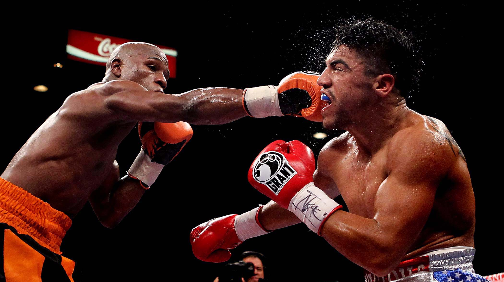

An eight-division titlist who the BWAA named its “Fighter of the Decade” for the 2000s, was the world’s premier pound-for-pounder from roughly 2006 to 2012.
Number 4 - Lennox Lewis
>Lennox Lewis is without doubt one of the smartest and most complete heavyweight fighters of all time. Born in England to Jamaican parents but brought up in Canada, Lewis won gold at both the 1986 Commonwealth Games and the 1988 Olympic Games. He quickly emerged as a top 5 world heavyweight, and became world champion in 1992.
Number 3 - Floyd Mayweather
Mayweather is an extremely polarizing figure who was almost universally considered the pound-for-pound king from 2007 until his “retirement” in September 2015. The 5-foot-8 Mayweather (50-0, 27 KOs), a five-division titleholder, was named The Ring’s “Fighter of the Year” in 1998 and 2007.
<
Number 2 - Mike Tyson
Perhaps the most feared fighter the sport has ever seen, Mike Tyson was the sport’s biggest star during the 1990’s. Iron Mike was a wrecking machine, he punched his way to becoming the youngest heavyweight champion of all-time at 20 years, 4 months and 22 days old when he knocked out Trevor Berbick in two rounds in 1986.
Number 1 -Muhammad Ali
The Greatest was not only one of the best heavyweights of all time, he was also one of the most colorful. He won the gold medal at the 1960 Olympics and went on to become the first boxer to win the heavyweight title three times. Ali finished his career with a 56-5 record with 37 KOs.